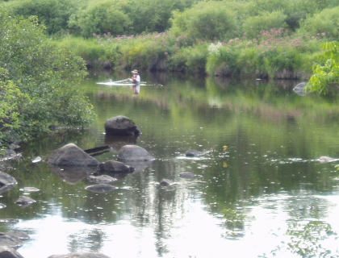

Watershed Modeling for Stream Ecosystem Management
Template #81

This project provides forecasting tools for managers to determine how water withdrawals or other hydrologic or land use changes in watersheds may affect Great Lakes ecosystems. This information will help guide restoration efforts to achieve maximum effectiveness and success.
The project relies upon regionally consistent hydrologic, biologic, and geospatial data to generate regionally consistent estimates, models, and analysis. The majority of work this FY has been estimating ungaged streamflow in the U.S. Great Lakes Basin through the AFINCH analysis program. This program develops time series estimates of monthy streamflow at ungaged locations in a two-step process. The first step is traditional regression of the observed monthly streamflow at USGS streamgages using landscape and climate information. The second-step corrects the regression estimate by routing water through the stream network and adjusting the estimated flows to match observed flows at active gages.
Project provides unified information across the Great Lakes Basin for ecosystem restoration, assessment, and management by incorporating models that relate changes in landscape and hydrologic variables and stresses to changes in ecosystem function.
Scientists updated the AFINCH analysis program to improve the ability of the analyst to archive and reproduce simulation results. The AFINCH analysis program is menu-driven, and, prior to this update, reproducing simulations would require the analyst to read through a log file written by the program and manually inputting the required information into the AFINCH program again. The program was updated to write and read an XML file that archives both the user input values and the AFINCH program regression results. Reproducing a simulation is streamlined as an analyst can now provide the XML file to the program to quickly set up the simulation and read the required information. The analyst can also verify that the reproduced simulation results match the original simulation. Project researchers worked with the USGS Center for Integrated Data Analytics (CIDA) to develop an on-line mapper that will deliver the time series of ungaged flow estimates produced by AFINCH to the public. Initial versions of the software have been developed and these will be refined during the remainder of FY13. Preliminary relations describing fish species response to altered streamflow also were developed. These relations will be refined as AFINCH flow estimates are finalized.
Howard Reeves, hwreeves@usgs.gov 517-887-8914 James McKenna, Jana Stewart, Paul Seelbach